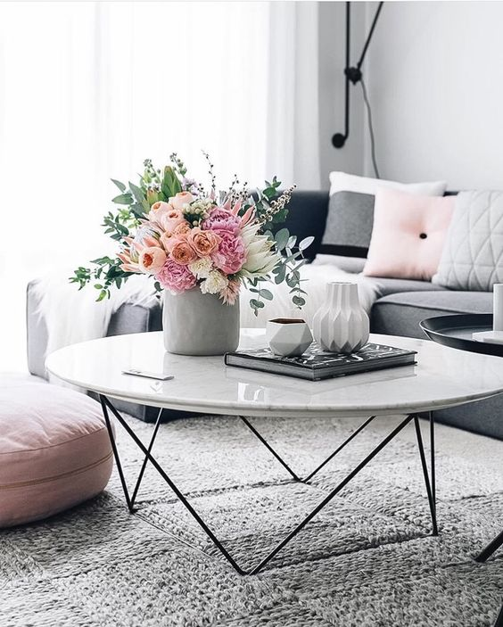

Minimalist interior design is one of the centerpieces of the 20th century. Spare and streamlined while still being inviting, minimalism is charming in almost any space. With less clutter to wade through and mentally process, the innate beauty of each piece of furniture or art in the home really starts to stand out.
With roots in both tropical and British Colonial decor, our Sakura Armchair reflects the well-traveled style of the past. Hand-woven rattan has the timeless good looks of a natural material in a neutral color, introducing a lighter, less formal aesthetic when mixed with heavier furniture. One in a room is impressive—add a pair, and you've made a major design statement. Requires a Large Modular Cushion.
Variety may be the spice of life, but Calliope is the spice of outdoor life. As attractive as any indoor pillow, our self-welted design is UV-resistant and mildew-resistant, yet oh-so-soft. Sprinkle generously on patio furniture.
Variety may be the spice of life, but Calliope is the spice of outdoor life. As attractive as any indoor pillow, our self-welted design is UV-resistant and mildew-resistant, yet oh-so-soft. Sprinkle generously on patio furniture.
You might also like...
